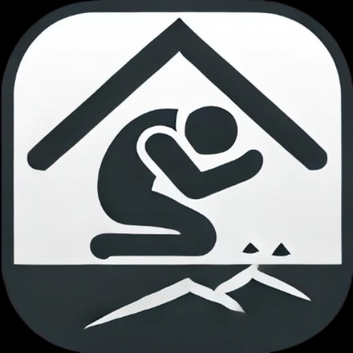

Quakely
Your earthquake safety companion. Quakely helps you identify the safest spot in your home during a quake,
using practical guidance inspired by best‑practice safety standards. Learn how to take shelter smartly,
prepare ahead with confidence, and turn critical moments into clear, calm action.
Open in new tab →